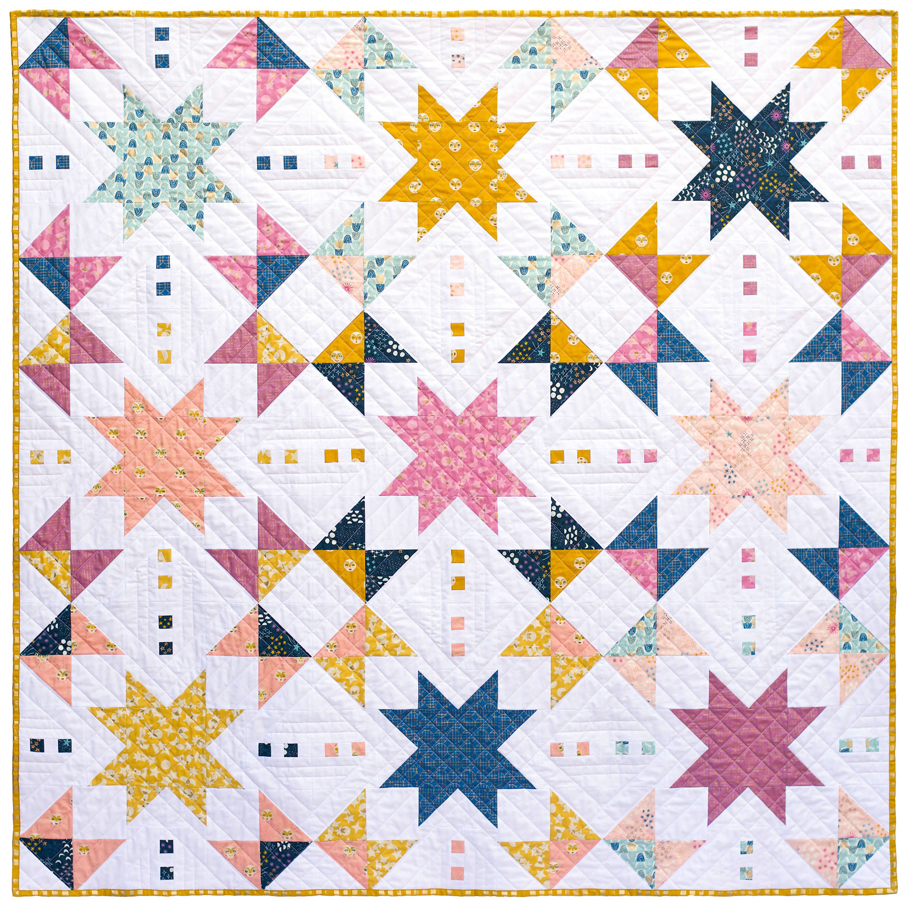

 When I think of design patterns, I think of patterns in art like quilts, so the topic of “Software Design Patterns” intrigued me because can coding have patterns? The pattern’s general definition is a regular, repeated, and often recognizable form or sequence of elements. For me, I immediately think of art and design. However, patterns are not only limited to art. Patterns are also seen in language, nature, music, and software development.
In terms of software development, design patterns are solutions to common problems encountered in software design. Conforming to the current modern web development ecosystem, design patterns have been modified, optimized, and created. Design patterns are a sustainable tool in software development. Developed through multiple rounds of trial and error, design patterns provide solutions that are flexible and maintainable, creating general reusable solutions. In addition, design patterns optimize performance and minimize energy consumption by using well-tested and proven solutions rather than reinventing the wheel. All in all, one of the primary benefits of design patterns is the promotion of code reuse.
As a pianist, I relate developing software design patterns with developing music on the piano. Rather than dictating the exact implementation details, design patterns act as a template for many problems, allowing developers to customize the patterns that fit the specific requirements. Similarly, I noticed in music that most pop songs use the same chord progression. As a Swiftie, of course, I learned how to play most of Taylor Swift’s songs, and I observed that she used the same chord progression in 20 of her songs, but the melodies are different! She used her favorite chord pattern as a template and added more flavor to the melodies, resulting in many unique songs. Despite using the same template, the outcomes are not always the same.
I usually can detect patterns in art and music, but I did not know I had unknowingly used design patterns in my development projects. Moreover, I used many design patterns in my code. There are many design patterns, but here’s a list of a few common software design patterns:
I used all these patterns at least once in my experience as a software developer. In an in-progress project called Yummy Foo, my group and I utilized multiple design patterns. For instance, we employed the Factory Method Pattern to create instances of different types of recipes. We used a Decorator Pattern to allow users to extend their recipes with additional features without modifying their structure. In addition, we utilized the Singleton Pattern to ensure a class has only one instance by providing a mechanism to control access to that instance. The Singleton Pattern manages global resources like configuration settings, logging mechanisms, and/or database connections. In our app, we used the Singleton Pattern to store and access all the recipes. Lastly, we used the MVC pattern which separates the application into three interconnected components, promoting ease of maintenance and modular design.
In conclusion, software design patterns are important because they provide reusable solutions to common problems, facilitate communication among developers, improve code quality, and contribute to the creation of scalable, flexible, and maintainable software systems.